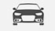
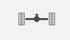
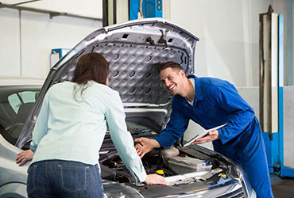

АВТОРИНОК
ЩО МИ ПЕРЕВІРЯЄМО

Кузов - перевіряємо кузов на предмет фарбування, ремонту, монтаж-демонтаж елементів, втручання в конструкцію авто, зварювальні роботи професійними приладами.
Безпека - стан капсули безпеки, систем активної та пасивної безпеки.
Електроніка - перевіяемо коректність роботи бортового комп’ютера та його показники.
Пробіг - перевірка відповідності заявленого пробігу автомобіля.
КПП - перевірка стану коробки передач, рівня рідини і коип’ютерна діагностика.
АКБ - перевірка стану АКБ, дати випуску, працездатності.
Двигун - перевірка стану двигуна, замір компресії.
Турбонадув - перевірка стану турбіни, тиску надуву, відсутності підтоку масла.
Гальма - перевіряємо стан гальмівних механізмів, дисків, колодок, антиблокувальної, антипробуксовочної, антизаносної систем.
Рульове управління - перевіряємо працездатність гідропідсилювача, рульової рейки.
Комплектація - перевірка відповідності комплектації і стану додаткових систем.

Ходова - перевірка стану ходової частини автомобіля, амортизаторів, шарових, стабілізаторів, пружин, подушок.
Колеса - дата виготовлення, залишок протектора, стан дисків.
Салон - стан салону може розповісти як про реальний пробіг, інтенсивність експлуатації авто, так і про бажання продавця приховати історію авто.
Юридична чистота - криміналістична експертиза авто, перевірка на предмет обтяжень і заборон відчуження.
 Ціна - аналіз ринкової вартості автомобіля та доцільності придбання.
Ціна - аналіз ринкової вартості автомобіля та доцільності придбання.
МИ ГАРАНТУЄМО

Гарантія технічного стану автомобіля
Ви отримаєте 100% гарантію ясності і розуміння всіх несправностей автомобіля, що діагностується. Акт перевірки Ви отримаєте на електронну пошту з усіма коментарями інспектора, який здійснював огляд автомобіля. Також в телефонному режимі наш експерт проконсультує Вас в доцільності придбання даного авто.
Ми впевнені в роботі наших експертів, тому всі несправності, які ми не зауважили під час перевірки або які виникнуть протягом двомісячної гарантії, ми
усунемо за свій рахунок.
оформити заявку
Гарантія юридичної чистоти
Ви купуєте автомобіль без кредитних і заставних зобов'язань, заборони на реєстрацію та інших обмежень.
Автомобіль проходить ряд перевірок:
Криміналістичну експертизу: на предмет заміни оригінального VIN-коду, так званої "перебивки". На предмет підробки документів. На наявність всіх табличок, наклейок та маркувань кузова і номерних агрегатів. На відповідність документів автомобілю. На відповідність контрольних номерів автомобіля і документів.
Перевірку по базах ДАІ і Бюро Кредитних Історійна відсутність: заставних зобов'язань. Обмежень на зняття або постановку на облік.
оформити заявку
Гарантія повернення 100% коштів
Якщо ми не зможемо знайти для Вас необхідний автомобіль в встановлені терміни - повернемо передоплату в повному обсязі.
Ми впевнені в своїй роботі і більше 200 підібраних автомобілів дозволяють нам давати таку гарантію:
У разі, якщо ми не зможемо знайти для Вас необхідний автомобіль, ми повернемо Вам передоплату в повному обсязі!
Саме тому, ми сміливо заявляємо, що кількість перевірених автомобілів при пошуку необмежена!
оформити заявку
ВИЇЗНА ПЕРЕВІРКА АВТО
80% автомобілів продаються після ДТП і 95% зі скрученим пробігом. Не впевнені у вибраному авто? Наш експерт перевірить!

Перевірка автомобіля по 100 параметрам
Реальна оцінка вартості автомобіля
Лист технічного стану авто
Експертна оцінка доцільності покупки
Перевірка професійними приладами
Професійний торг
Знажка 5% при замовленні послуги "Підбір автомобіля"
від 400 грн
замовити
"Виїзна перевірка" підійде Вам, якщо:
Натисніть щоб дізнатись
Виїзна перевірка підійде Вам, якщо:
- Ви вже знайшли потенційно хороший автомобіль
- Він Вас влаштовує, але немає можливості переконатися в його стані
- Вас насторожує якийсь нюанс в автомобілі або його власника
- Друг чи товариш,який розбирається в автомобілях не може приїхати
- У Вас (Вашого знайомого) вже є досвід покупки невдалого автомобіля
- Ви не можете приїхати і подивитися автомобіль з кількох причин:
Не відпускає робота / навчання / бізнес
Ви перебуваєте далеко від місця огляду авто
Просто не хочете втрачати час
ПРОДАЖ АВТО
Як оцінити автомобіль, як створити та розмістити дієве оголошення? Ми допоможемо Вам швидко продати авто!
Перевірка технічного стану автомобіля
Консультація по ринковій пропозиції
Реальна оцінка вартості автомобіля
Підбір найкращого варіанту для вигідного проажу
Розміщення дієвого оголошення не тільки в інтернеті, а й у власній та партнерських базах
Отримайте максимально високу ціну за авто
Терміновий викуп автомобіля
від 400 грн
продати авто
Чому вигідно скористатись даною послугою?
Натисніть щоб дізнатись
Чому вигідно скористатись даною послугою?
- Ми допоможемо в максимально короткий термін продати авто і не втратити в ціні
- Ми супроводжуємо процес продажу, що оберігає Вас від шахраїв
- Ви не витрачаєте валасний час на показ авто
- Отримаєте максимально високу ціну за Ваш автомобіль і не втратите на торгах з потенційним покупцем
- Експертна оцінка авто
- Наш експерт підбере для Вас найкращий варіант для продажу (інколи невелика інвестиція в ремонт авто збільшує його вартість на 300-600$)
ПІДБІР АВТОМОБІЛЯ
Не хочете витрачати свій час на пошук автомобіля, переглядати сотні оголошень щодня, оглядати десятки автомобілів в різних кінцях міста?
Економія власного часу та грошей
Автомобіль який задовільняє Ваші вимоги
Супровід процесу покупки
Контроль передачі грошей та оформлення документів
Можливість отримати кращий автомобіль за розумні кошти
Професійний торг
від 300$
підібрати авто
Кому підходить "Підбір автомобіля"?
Натисніть щоб дізнатись
Послуга "Підбір під ключ" підійде Вам, якщо:
- Ви вже подивилися кілька варіантів і зрозуміли, що хороший авто знайти непросто
- Чи не маєте достатньо знань в області автомобілів для самостійної перевірки
- У Вас немає часу на довгі і виснажливі пошуки
- Чи не знаєте який автомобіль Вам підходить і як його вибрати
- Чи плануєте заощадити на покупці автомобіля за рахунок нашого професійного торгу
- Хочете бути впевненим в покупці, отримавши двомісячну гарантію на куплений авто
- Не вмієте, соромитеся або не хочете торгуватися
- Ви бажаєте отримати кращий автомобіль за свої гроші